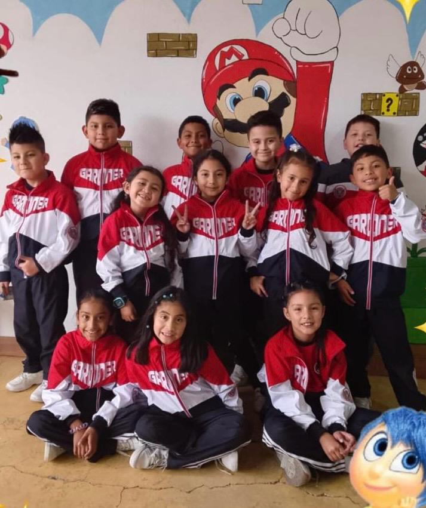
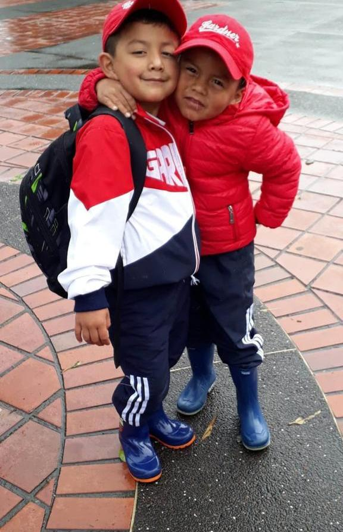
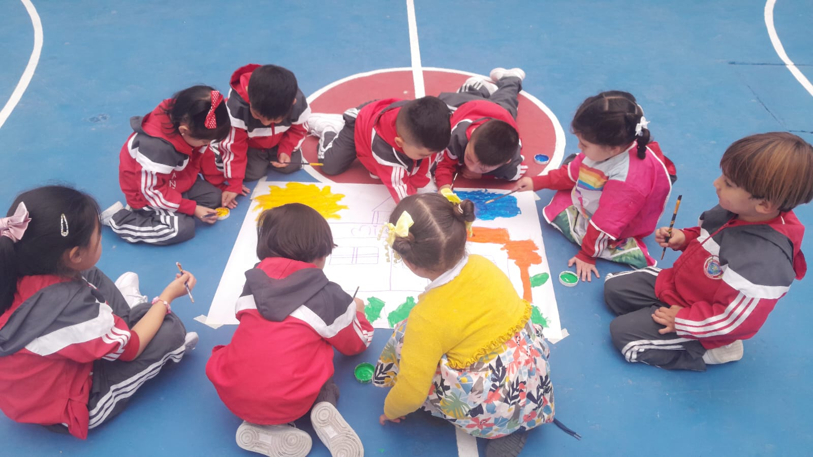

Institucion educativa activa
Educacion integral con identidad, valores y futuro
Bienvenidos al Jardin Infantil Gardner, una institucion comprometida con el desarrollo de las inteligencias multiples, la convivencia armonica y el crecimiento socio-cognitivo de ninos y ninas.
Nuestra propuesta acompana a cada familia desde los primeros pasos, fortaleciendo aprendizajes, habilidades, principios y sentido de comunidad en el contexto de Ipiales.
Inteligencias multiples
Valores y convivencia
Desarrollo integral
Familia y comunidad
Crecimiento socio-cognitivo
Vida institucional
Asi se vive Gardner en cada actividad
Compartimos algunos momentos reales de nuestra comunidad educativa: aprendizaje, juego, expresion y acompanamiento en cada etapa.

Identidad y alegria escolar
Experiencias que fortalecen la convivencia, la confianza y el sentido de pertenencia.

Acompanamiento cercano
El cuidado y la amistad tambien hacen parte del proceso formativo.

Fechas pedagogicas significativas
Celebramos proyectos de aula que conectan cultura, lenguaje y creatividad.
Nuestra identidad
Una institucion enfocada en educar para una mejor sociedad
El Jardin Infantil Gardner promueve una formacion cercana, organizada e innovadora, donde cada estudiante desarrolla sus capacidades en un entorno seguro, humano y conectado con su comunidad.
Educacion integral e inclusiva
Potenciamos aptitudes, habilidades y destrezas mediante experiencias que reconocen la diversidad y fortalecen el aprendizaje significativo.
Principios, valores y convivencia
Acompanamos el crecimiento de ninos y ninas con una cultura basada en el respeto, la armonia, la paz y la construccion de relaciones sanas.
Escuela, familia y entorno
Impulsamos proyectos que integran familia, institucion y contexto local para fortalecer identidad, pertenencia y desarrollo social.
Mision y Vision
La base que orienta nuestro proyecto educativo
Mision
Nuestra mision
La institucion educativa Gardner promueve una educacion integral e inclusiva enfocada en el desarrollo de las inteligencias multiples, fortaleciendo principios y valores que garantizan una convivencia pacifica y armonica, al mismo tiempo que estimula el crecimiento socio-cognitivo de los ninos y ninas para la construccion de una mejor sociedad.
Vision
Nuestra vision
Para el ano 2029, la institucion educativa Gardner sera reconocida por su excelencia en el servicio educativo, destacandose como lider en educacion integral. A traves de proyectos pedagogicos innovadores, potenciara las aptitudes, habilidades y destrezas de sus estudiantes, contribuyendo al fortalecimiento y desarrollo de nuestra sociedad.
Proceso de admision
Requisitos de matricula
Para iniciar el proceso de ingreso en el Jardin Infantil Gardner, prepara con anticipacion los siguientes documentos.
01
Copia del registro civil o tarjeta de identidad.
02
Liberacion de cupo.
03
Paz y salvo de la institucion anterior.
04
Certificados de estudio de los dos ultimos anos escolares.
05
Copia del carne de vacunas.
06
Copia de la cedula de los padres.
07
Dos fotografias tamano carne fondo azul.
08
Copia del ultimo control de crecimiento y desarrollo de la entidad de salud.
09
Certificado medico.
10
Certificado de afiliacion a regimen de salud.
Plataforma academica
Ingresa al modulo institucional
Ademas de la informacion institucional, este portal permite el acceso por perfil a los modulos del estudiante, profesor, administrador y acudiente.
Acceso al sistema
Selecciona tu perfil
Elige directamente el rol con el que deseas iniciar sesion dentro de la plataforma academica.
Estudiantes
Profesores
Administracion
Acudientes
Los accesos quedan visibles para ingresar sin pasos intermedios.
Comuniquese con nosotros
Contactenos
Estamos listos para orientar a las familias en procesos de matricula, informacion institucional y acompanamiento dentro de la comunidad educativa.
317 424 4065
315 581 7651
Ipiales
Narino, Colombia
PEI Gardner
Propuesta integral para la primera infancia.
Atencion institucional
Ir al acceso institucional
Escribenos
Usa estos canales para iniciar contacto con la institucion y recibir orientacion segun tu necesidad.
Llamadas y WhatsApp
Atencion directa para familias y procesos de ingreso.
Escuela y familia
Acompanamiento cercano a la comunidad educativa.